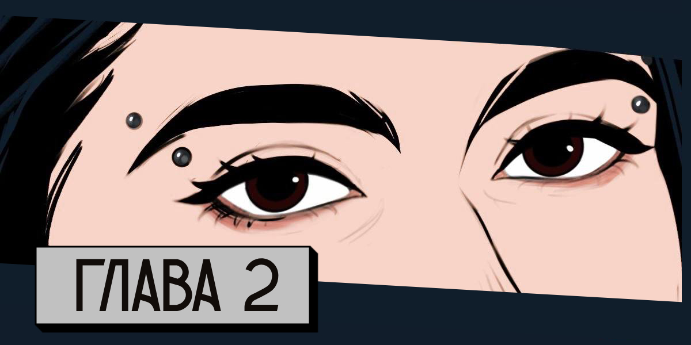

Казалось, на Кудыкиной горе никто не заметил ничего странного. Те парни нас не нашли, чтобы, например, рассказать о том, что это был за мужик и что с ним теперь. Или хотя бы уточнить, живы ли мы или померли от страха — мы хоть и не кисейные барышни, но стрессанули знатно. Ни даже администрация ничего не сообщает об этом инциденте, когда мы съезжаем из домика и сдаём ключи.
— Может спросить?.. — шепчет Тора, пока девушка-администратор мило улыбается и щелкает компьютерной мышкой.
— Да ну, — отмахиваюсь я. — Всё же хорошо. Все живы.
Зачем лишний раз отвлекать и привлекать внимание к себе.
Конец мая, а на улице такая жара, словно уже наступил знойный август. Благо, в пятницу ночью прошла гроза, и сейчас хоть немного сохранилась лёгкая свежесть, которая, правда, быстро сходила на нет под солнцем.
На приборной панели авто я смотрю на температуру на улице: двадцать семь. К вечеру наверно будет ещё хуже, благо мы будем до самого дома в машине с кондиционером.
С нами одновременно выезжают с территории ещё несколько авто, но они быстро уматывают вперёд, словно куда-то торопятся. До самого шоссе всё спокойно: мы выезжаем из деревни и обгоняем трактор, пугаем стайку воробьев у дороги, пару раз подскакиваем на неровностях. Навигатор уверенно ведёт вперёд, к Москве, и говорит, что ехать нам где-то около пяти часов только до места, где я высажу Настю. А всё потому, что ближе к Москве видится что-то неприятно красное на маршруте. Да, понимаемо, что у нас воскресенье, все или возвращаются с дач, или с таких вот путешествий, но… как же бесят эти толпы людей, ну.
— Хм-м, — вдруг тянет Тора где-то позади. Слышу её глухо, но напрягаю слух. — Говорят… новости пишут, что Москва перекрыта.
— В смысле?! — восклицаем мы одновременно с Настей. Синхронность, которая не сулит ничего хорошего.
— Сама пока не могу понять, — бормочет Тора, и я прямо слышу, как она ещё усиленней начинает тапать по экрану телефона.
Вижу краем глаза, как Настя открывает навигатор. Добирается до Москвы, внутри которой удивительно зелено. Хмурится, нажимая на какие-то значки и что-то изучая.
— На всех крупных трассах стоят точки и инфа о том, что дорога и правда перекрыта, — бормочет Настя. — Но пояснений никаких нет.
— Вот теперь попробуй найти истину, — недовольно бросаю я. — Сейчас вывалят не только настоящие причины, но и предположения. Попасть-то внутрь можно? А если есть прописка…
Химкинская, но всё же… Но все же для начала мне надо попасть в Москву, чтобы забрать пса
— Ищу, — отзывается Тора. — Как обычно, определиться не могут.
— Может на официальных каналах поискать?.. — подсказывает Настя.
Ладони потеют, отчего держать руль сложнее. Тянусь к кондиционеру, чтобы подсушить кожу. Ноги начинают болеть от напряжения. То есть в Москву не пускают? Всех? Почему? Только со стороны юга не пускают или со всех дорог? Настя сказала, что все крупные трассы перекрыты. Да что произошло?!
— Пиздец, — шепчет Тора спустя время.
Мы едем по платке, на которую с трудом втиснулись, потому что было очень много машин. Плюс некоторые умники пытались проскочить с наличкой через шлагбаум, где оплачивается только транспондером, отчего иногда возникали неприятные пробки. Мы вроде как не торопимся, но эти задержки раздражают — складывается ощущение, что мы теперь точно никуда не успеем и не попадем.
— Что нашла? — оживляется Настя, которая до этого что-то кому-то усиленно писала. Наверно родным, но я не уверена.
— Появился какой-то новый официальный канал, связанный с перекрытой Москвой и с… — Тора возникает между сидений. — Какой-то инфекцией, которую там нашли. Ничего непонятно.
— Инфекцией? — скептически повторяет Настя. — Что там за инфекция такая, что пришлось аж весь огромный миллионник перекрыть? Столи-ицу! Во время ковида не было такого жесткоча, а тут… двадцать шестой год, ребят. Мне домой надо…
— Я могу прочитать инфу, что есть в инете… — продолжает Тора. Мы сильно замедляемся — на навигаторе немного красного и знак ремонта дороги. — Но у меня даже от этих предположений все кишки скукожились.
Кошусь на Тору. Мы полтора дня проходили под солнцем, но даже этот свежий загар не скрыл её бледность лица.
— Давай, всё равно делать нечего, — подбадриваю я, хотя и чувствую неприятное волнение в животе.
— "Точечные вспышки инфекции зафиксированы в некоторых регионах страны. Заразившиеся ведут себя агрессивно. Речь не идёт о массовом заболевании, поэтому просим сохранять спокойствие"…
— Классика, — тут же врывается Настя. — Они и с ковидом подобное говорили и советовали.
— Ну да, кстати, — поддакиваю я. — Наверняка новая инфекция не такая страшная, как ее малюют.
— Но город тем не менее перекрыли… — тихонько добавляет Тора, отчего в машине возникает гнетущая тишина.
Смотрю налево. Во втором ряду почти рядом с нами стоит кроссовер. Водитель — мужчина, спокойно держит руль и смотрит вперёд. Женщина же рядом с ним судорожно что-то печатает в телефоне, потом читает, потом записывает голосовое. И движения у неё такие дерганные, нервные. Жутко.
— Ещё неизвестно, как быстро распространяется инфекция. И какие-то дикие предположения о том, что она делает с людьми. Кто-то пишет про помешательство и нападения, кто-то про стопроцентную смертность, кто-то про то, что человек становится овощем…
— А официалы? — уточняю я, когда Тора затихает.
— Не знают пока что, просят быть осторожными, носить маски, мыть руки, не заниматься самолечением, лишний раз не выходить из дома…
— То-то Москва такая зелёная, — хмыкает Настя.
— В кои-то веке, — поддерживаю я.
Пробка растягивается вначале на полчаса, потом на час. Мы почти не едем. И иногда я глушу двигатель, чтобы не тратить бензин, потому что неизвестно, когда будет ближайшая возможность заправиться — тем более с таким плотным потоком есть шанс, что бензин закончится и на заправках. По салону быстро распространяется духота, как в гробу. Поэтому порой мы выходим из машины, разминаем ноги, дышим, когда поднимается хоть какой-то ветерок.
Липецкая область жаркая, насыщенная зноем и запахами и немного степная. По краям дороги встречаются деревья, редкие лесополосы, но они не дают тени, поэтому мы паримся под солнцем.
— Кепки ни у кого нет? — спрашивает Тора, гоняя на себя воздух блокнотом, который у неё был с собой, когда мы в очередной раз выходим из машины. Стояли мы уже минут двадцать. На часах около трех часов дня. А в дороге мы продвинулись совсем немного.
— Есть ощущение, что до Москвы мы сегодня не доберёмся, — бурчу я относительно громко, обходя Тору. На панели за задним сиденьем нахожу кепку, которую вожу чисто на всякий случай — места много не занимает, а вот, пригодилась.
— С каждым часом на дороге появляется всё больше красного, — подходит Настя с телефоном в руке. — Кусочек зелёного и опять красное. И так до самой Москвы, где написано, что там какое-то перекрытие и никого просто так не пускают. Точнее, кого-то пускают, но единиц и непонятно по какому принципу.
— Ну охуеть, — выдыхает Тора, — я домой хочу.
— Все хотят, — Настя обводит рукой пробку.
Замечаю, как где-то впереди начинается движения.
— По коням, — бросаю я и иду в машину. Наконец можно включить кондиционер.
Но наше счастье длится недолго. Спустя получаса относительно зелёной дороги, когда мы размеренно двигались всей гурьбой на Москву — как завоеватели, ей-богу — мы опять встаем. Близится шесть вечера. Становится чуть полегче — солнце закрыли полутонкие тучи. Поэтому мы выключаем кондиционер и открываем окна.
— Мы что, всю ночь будем ехать? — недовольствует Тора.
— Не-ет, — медленно тяну я, и мы переглядываемся с Настей. — Скорей всего мы где-то остановимся на ночь и поспим, потому что я не выдержу всю ночь без сна и за рулём.
— А-а-а, — недовольно тянет Тора. — Спать в машине?
— Ну а что поделать, — пожимаю я плечами и проезжаю ещё двести метров. — Или там, или где-то в кювете мы потом будем ночевать.
Настя молчит. Вижу, что улыбается.
— Ладно, может и получится поспать, — обреченно выдаёт Тора.
— У тебя вообще все заднее сиденье в распоряжении, — говорит Настя. — Развались на нём как королевна, да спи.
После того, как мы простояли полтора часа в очереди на заправке, перекусили купленными за какие-то баснословные деньги хот-догами, орехами и батончиками, опять потолкались в пробках, где-то к половине десятого вечера мы добираемся до забитой парковки. Еле находим свободное место с краю, и наконец останавливаемся. Выдыхаем.
— У меня сейчас спина отвалится, — стону я и вылезаю из машины. Потягиваюсь. Вокруг толпятся люди: едят, хохочут, общаются, некоторые пьют — беззаботные. Но находятся и те, кто нервно вытаптывает траву за стоянкой, разговаривая при этом по телефону.
Девки выходят из машины.
— Аналогично, — разминается Тора.
— А мне понравилось, — устало, но улыбается Настя. — Хоть мы и не попали домой, зато какое приключение.
— Если б ещё что-то понятно было, — отзываюсь я. — Даже с Таганрога до Москвы можно добраться меньше, чем за день, а мы по ходу не меньше суток будем ехать. Вот тебе и отдохнули на выходных, ага.
— Тора, в новостях больше ничего не было? — интересуется Настя, доставая воду из багажника и посматривая туда подозрительно счастливо. — Оля, у тебя же есть подушки.
— Две, — уточняю я, видя её хитрый прищур. — И покрывало пса. Можно вместо подушки взять, оно как раз стиралось недавно и не использовалось.
— За подушки придётся драться, — хмыкает Настя. — Что у нас есть из еды…
Мы с Настей выскребаем запасы, пока Тора курит и скролит ленту новостей в телефоне.
— Девчат, дико извиняюсь, не будет пол-литра водички. А то у меня закончилась, — подходит к нам какой-то щуплый парень. Такому пол-литра на целый день наверно хватает.
Воды у нас достаточно: полная пятилитровая и ещё половина такой же бутылки. Как мне кажется. Но делиться все равно немного жмотно. Вдруг потом нам не хватит. Вдруг придётся ехать дольше, чем просто сутки.
— Да, конечно будет, — улыбаюсь я. Поделимся сейчас мы, потом нам что-нибудь нужное перепадёт.
Получив воду, парень удаляется. Настя копошится где-то впереди машины, Тора бродит в стороне.
— Что есть перекусить? — уточняю я. Есть не очень хочется, но лучше чем-нибудь хоть немного закинуться.
— Вот, — Настя обводит руками наши запасы, разложенные на капоте — намечается походный ужин.
Пачка орешков, два злаковых батончика, шоколадка, баночка колы — неплохо. Огурцы и помидоры, тарелка рыбного шашлыка, полпачки сыра, хлеб, бутылка безалкогольного вина — как же хорошо, что мы это после выходных не выкинули, а взяли с собой.
— Да-а, — выдыхаю я. — Вот это мы гульнем сейчас.
— Девы, это пиздец, говорят, что ситуация в Москве пока стабильная, и что в город пускают только детей, беременных и врачей, — появляется возле нас Тора, бросая голодный взгляд на еду.
— Охренеть, как все серьезно. — замечает Настя. — Это что там за инфекция такая…
— Ещё говорят, что инфекция очень заразная, — продолжает Тора, все ещё посматривая на еду. — И внешне почти не проявляется. Что болезнь протекает незаметно.
— Это они конечно зря такое говорят, — отвечает Настя. — Да и они не могут этого знать наверняка. На тесты и анализы нужно не меньше четырёх-пяти дней, так что это не похоже на достоверную информация. Наводят панику среди людей непонятно зачем.
— Ну собравшимся здесь или по фиг, или же они ещё ничего не знают, — осматриваюсь я.
— Да наверно первое, — соглашается Настя. — Как можно не знать, по какой причине вы едете до Москвы сутки, а не обычные шесть-семь часов, например.
— Тоже верно, — опять поддакиваю я.
— Ладно, давайте поедим, что ли, — выдаёт Тора.
С шутками, которые очень походят на предистеричное состояние, с обсуждением всякой фигни, с приятным молчанием и нечастой музыкой, доносящейся из рядом стоящих машин, мы ужинаем.
— Тора, сорян, но тебе достанется покрывало, потому что ты и так на заднем сиденье будешь, — ставлю я Тору перед фактом и кидаю одну подушку Насте.
— Ла-адно, — соглашается Тора. — Я всё равно не усну. Наверное.
— Попробовать надо.
— А можно дверь открытой оставить? — уточняет Тора.
Задумчиво осматриваюсь. Удивительно, но комары пока нас не доставали, однако рядом с другими машинами я вижу возню и как люди машут полотенцами и кепками. Ох, не только людям я бы не доверила сейчас… Ох, не только…
— Сейчас, — говорю я.
Достаю репеллент — как хорошо, что мы едем с природы и у нас есть такие запасы, ну — и обхожу вокруг машины, опрыскивая её бока.
— Теперь можно, — улыбаюсь.
— Лакшери, — замечает Настя, откинув спинку кресла. Настя тоже оставила открытой дверь. Но я, сев на водительское место, закрываю её — отчего-то неуютно спать с открытой дверью. Ощущение, будто ты входную забыл закрыть — ОКР хоть и не страдаю, но проверяю подобное часто.
Тора с кряхтением, от которого мы с Настей тихонько хихикаем, ложится головой в сторону открытой двери, и тяжело выдыхает. Наступает первая — и хотелось бы верить, что единственная! — ночь нашего пути до Москвы.
*
— Сколько идти? — уточняет Настя.
— Судя по карте и перекрытию, по толпе и насыщенности машин — идти нам не меньше часа, — информирую я, — а может и часа полтора.
Убираю телефон в карман и достаю из машины рюкзачок с документами. Тора берет сумку, косится на забитый рюкзак.
— А вещи берём? — все же спрашивает она.
— У меня так получилось, что все вещи в одном месте лежат, — отвечает Настя, беря свою единственную ношу в виде рюкзака.
У меня хоть и нет с собой вещей в рюкзаке, но там точно есть необходимое на пару часов.
С неспокойным сердцем блокирую машину, и относительно налегке мы вливаемся в шествующих до перекрытия людей.
Остановились мы на Минском шоссе на территории заправки, потому что дальше ехать было все сложнее и сложнее — куда нас занесло явно не по желанию.
Маршрут до Москвы растянулся на три дня! Точнее к концу третьего дня мы наконец кое-как приблизились к Москве: к перекрытию возле Сколково, где, как мы видели информацию, собирались в скором времени открыть карантинную зону, куда, как мы надеялись, пустят и нас. Например.
Тора за эти две ночи стала выглядеть не лучше мертвеца: побледнела — хотя у неё обычно кожа приятного теплого оттенка; мешки под глазами сильно выделились, отчего её карие глаза стали ещё пронзительней; блондинистые волосы, собранные в две куксочки, слегка потускнели от вынужденного трехдневного воздержания от воды; движения стали дерганными, ну и курить Тора стала больше, потому что никто из нас не очень-то и понимал, что происходит. А уж как мы с ней стоптались за эти дни…
Настя же хоть и выглядела уставшей, но держалась много лучше нас — ещё бы, у неё завивка, у неё до сих пор рекламные локоны, это я с грязными волосами в хвосте была как мойра. По большей части усталость Насти выдавали мешки под глазами и покрасневшие белки глаз, отчего зелено-голубая радужка смотрелась более жутко. Но Настя как была выше нас, так и осталась. Этакий Гендальф в стране хоббитов.
У меня были смешанные чувства: с одной стороны, это приключение очень волнующее, хоть и ощущалась в воздухе какая-то напряженность, с другой — спина болела от долгого сидения за рулем, ноги казались деревянными от того самого напряжения. И голова немного гудела, да.
Эти три дня мы насколько возможно — и невозможно… — часто останавливались в пробках. Останавливались на отдых, потому что в какой-то момент понимали, что явно быстро не доберемся до Москвы, поэтому решали замедлиться, чуть подумать, чуть выдохнуть. Останавливались заправиться, так как на улице стояла жара и духота такие, что аж кондей, который хоть и мало, но тоже жрал бензин, не хотелось выключать: тут же налетали мухи и слепни в открытые окна, да и даже дышать было тяжело без него. И думать, и выживать, и сохранять приличный вид.
— Сколько. Же. Людей, — шиплю я, когда парочка очередных торопыг проскакивают мимо меня, чуть не снеся с обочины.
— Все хотят домой, — Тора пожимает плечами и вновь закуривает, отчего вокруг нас становится чуть свободней. И я, кстати, заметила за время дороги, что даже курящие люди (которые в тот момент не курят) не очень любят, когда рядом с ними дымят.
— Еще бы знать, как туда попасть, — хмыкает Настя.
Только меня напрягает, что машина остается где-то… снаружи, так сказать. Да, пока никого не пускают. Но я слышала, как некоторые обсуждали, перекрытие, надежды на то, что скоро там сделают какое-нибудь дополнительное КПП и вообще будут пускать на машинах.
Дурдом какой-то, ей-богу.
Темнеет, становится хоть и легче, но духота все равно висит среди нас. Через полчаса толпа — и мы вместе с ней — замедляется, еще через десять минут мы полностью встаём. Слева плотным морем выстроились машины — никто и никому не дает спуску, не пропускает. Люди движутся или среди машин, или по обочине, часто тоже обходя автомобили, которые ушлыми сволочами пытались побыстрее проскочить, да так и зависли на среди толпы.
А ещё левее, на встречных полоса ходят мужики в военной форме и стоят грузовики зеленоватой расцветки — тоже военные. Это все богатство отделено от нас не только бетонными блоками, но также дополнительно установили шесты, на которых невысоко протянута сетка — как они это оперативно провернули.
— Зелёный коридор даже себе сделали, — хмыкает Настя.
— Чтобы с людьми не контачить? — уточняю я.
— В том числе, — Настя пожимает плечами.
Где-то чуть впереди в этом коридоре вижу блестящие нашивки на одежде и темный силуэт. В рупор разносится голос:
— Просим сохранять спокойствие, становитесь в очередь и ожидайте. — Мы замерли примерно, э-э-э, в пяти километрах от перекрытия и здесь везде люди. И не лентой очереди, а кучами. Военные приближаются. — Мы собираем списки желающих попасть в город. Ожидайте на местах. — Они в медицинских масках и вооружены, поэтому, думаю, никто пока и не бузит. Да и устали люди. — Три раза в день на каждом километре раздают пайки и воду. Повторяю, просим сохранять спокойствие — все эти мероприятия направлены на вашу же безопасность.
— Это будет самая долгая очередь в нашей жизни… — стону я.
— Не хотелось бы сидеть на земле или асфальте ночью, — вздыхает Тора. — Надо было все же брать вещи.
— Можешь сходить за ними, или сбегать, — подсказывает Настя. — Мы все равно отсюда никуда не денемся в ближайшее время.
— Хорошая идея, — Тора осматривается. — Но позже. Сейчас пока надо разобраться с ситуацией.
— А что разбираться, — замечаю я. — Мы застряли в самой бесконечной очереди в мире. Сколько мы в ней пробудем, хрен знает. Может день, а может и дней пять.
На нас косятся рядом стоящие люди, которым видимо тоже не улыбается стоять почти неделю в очереди. Ну хоть кормить будут, ребят! Еще бы стульчик где найти…
— Пойду пройду вперёд, поспрашиваю, — Тора что-то печатает на телефоне.
— Подожди, — останавливаю я её. Мы хоть и не в ужастике, но разделяться все равно пока не очень хочется. — Пошли вместе. Настя, где официальное КПП?
— Там, — Настя машет вправо, куда и правда идёт если не большая часть, но все же прилично людей из толпы.
— Пошли туда сходим, посмотрим, вдруг проскочить получится, — последнее я говорю чуть тише, чтобы никто лишний не услышал, а то ещё поплетутся за нами. Там и так протолкнуться сложно, судя по виду, словно мы на концерт Кадышевой пытаемся прорвать.
Мы поворачиваем и начинаем потихоньку продвигаться вперед, к частным домам. Идём медленно, потому что тех, кто захотел пойти дальше, не так много, отчего я ловлю недобрые взгляды и уже чуть ли не жду визга "Девушки-и-и, вы куда без очереди!".
— Надо бы еще до магазина сходить, — вздыхает Настя, пока мы как паломники пытаемся добраться до священного КПП. — Я хоть есть и не хочу, но ночь будет до-олгой. По крайней эта первая точно. А вы наверняка уже есть хотите.
Тора усиленно кивает и уверенно, танком прёт вперед, расчищая нам путь.
— Ближайшие магазины наверно уже пусты, — подмечаю я, оглядываясь.
— Что-то да должно там остаться, — Настя пожимает плечом. — Нам до утра любой перекус сгодиться. А там и до пайка доживем.
— Точно, паек, — щелкаю я пальцами. — Если честно, я от нервов есть не хочу, но понимаю, что нужно хоть что-то сожрать.
— Да и Тора наверняка готова съесть слона, — улыбается Настя, отчего я смеюсь.
Тора вновь усиленно кивает и оборачивается к нам с широкой улыбкой
Не знаю, как далеко мы прошли и насколько приблизились к сколковскому КПП, но в какой-то момент мы просто встали, потому что людское море не пропускало ни единой капли в лице нас.
Впереди вроде виднелось пространство без домов и деревьев, но до него было сложно добраться — да и возможно там было опять перекрытие.
— Гадство, — недовольствует Тора.
Вокруг стоит гул от разговоров, в стороне слышны озвученные в громкоговоритель какие-то предупреждения о том, что не надо пытаться пролезть. Краем уха я улавливаю что-то про бешенных заразившихся и что никого в Москву не пускают. Вообще никого. Мы с девками одновременно переглядываемся.
Тора достаёт телефон и начинает там что-то судорожно писать. Настя осматривается и хмурится.
— Не знаю даже, есть ли смысл тут стоять, — задумчиво говорит она.
— Давай немного постоим, посмотрим, послушаем хоть, что тут происходит. Да и может услышим что интересного, — предлагаю я.
— Это все будут слухи, — встревает Тора, не отрываясь от телефона. — Недостоверная информация, которая может запутать и испугать.
— Согласна, — киваю я. — По большей части так и бывает. Но все же в них может попасться что-то полезное.
Мы ненадолго замолкаем, и я тоже достаю телефон, чтобы написать матери. В конце второго дня пути до Москвы я узнала от нее, что Десногорск тоже перекрыли — что логично, там важная АЭС. Каким-то чудом мать с новым мужем успели туда пробраться до этого (вот что делает с людьми чуйка), поэтому мои родные были сейчас в куда более безопасном и спокойном месте.
Мы стоим и стоим, потом немного сидим на траве, потом опять стоим, разговариваем и смеемся, но как будто чуть истерично. Прошло уже почти два часа, но никакого движения не наблюдается. Поэтому Тора вновь изъявляет желание сбегать за рюкзаком, но я останавливаю, потому что прямо в этот момент слышу сбоку какой-то шум.
— Без паники, — орет где-то впереди громкоговоритель. В тот же миг нас начинают теснить назад, толпа наваливается то группируясь, то редея. Людское море шумит и волнуется. — Ситуация под контролем. Просим не приближат… ш-ш-ш…
— Куда не приближаться? — выкрикивает Тора, потому что вокруг мгновенно поднимается суета. Никто не стоит на месте, все шевелятся и галдят, что перепуганные сороки.
— Чую, какой-то пиздец, — тихо говорит Настя, отчего у меня слабеют колени. Очень хочется в машину — там хоть какая-то иллюзия безопасности.
Мы напряженно всматриваемся в сторону, где больше всего происходит волнения, и буквально через полминуты я замечаю заветное движение: люди бегут толпой, такой плотной, словно это рыбный косяк, распихивают всех и все на пути.
Почти ночь, фонари включены, поэтому вся это суматоха хоть и видна, но выглядит она настолько жутко в искусственном свете, что появляется ощущение сна. Или ужастика. Хочется проснуться, но… придется действовать наяву.
— Девки, пошли отсюда, — хватают я девок за руки, пячусь и тяну за собой.
Не знаю, что происходит, но съебать отсюда нам просто необходимо.
— Что? Куда?! — не понимает Настя. Девки не бегут, хоть я и вижу, что тела у них напружинены.
— Нас затопчат, глянь! — гул, крики — все приближается.
— Спасайтесь! — орет какая-то женщина, врезаясь в нас стоящих. — Там инфицированные! Бегите!
Она нас толкает, отчего я чуть не падаю, но меня удерживает Настя, и женщина бежит дальше вперед.
Мы пытаемся отойти в сторону, чтобы пропустить бегущих, но их слишком много. Еще немного и они правда нас затопчат…
— Что за… — шепчет сбоку Тора. Слежу за ее взглядом и вижу впереди, как на упитанного, взрослого мужика налетает какой-то парень. В свете фонарей его кожа кажется неестественно желтой, одежда местами рваная, словно он боролся с кем-то и ранее. Парень налетает на мужика, валит его на землю и кусает в голое плечо. Мужик орет матом, который теряется в гуле, и пытается отбиться. Но никто ему не помогает, все отбегают, убегают, спасаются.
Делаю шаг назад. Колени трясутся, а сердце от страха вот-вот грозится пробить грудину.
— Девки, давайте съебывать, — шепчу я, вновь отступаю и спотыкаюсь об что-то. Обернувшись, замечаю сидящего на земле человека, который держится за явно сломанную ногу и невидящим взглядом смотрит на эту тупую, будто фильмовскую, но вместе с тем настоящую сцену нападения.
И мы наконец бежим, мимо обычных, таких уютных домов. Тора впереди, расчищает путь, слегка подталкивая зазевавшихся. Настя где-то рядом со мной — я вижу её краем глаза. В воздухе как будто пахнет железом, хотя везде вокруг дерево и зелень. Главное добраться до шоссе, а там и зеленый коридор, и военные, и помощь, и прямая до машины, где уж точно безопасно.
В какой-то момент я понимаю, что на земле лежат люди. Кто-то вообще не двигается и по ним бегут, их топчут двигающиеся в панике. Кто-то еще шевелится и пытается отползти в сторону. Зрелище настолько нереальное, что на мгновение вновь появляется ощущение сна, я торопливо щипаю себя, чтобы не залипать, не отвлекаться от дороги.
— Где Настя?! — орет остановившаяся Тора, в которую я тут же врезаюсь и хватаюсь за нее.
— Тут… — оборачиваюсь, но не вижу рыжую макушку.
Мы застываем в ожидании. Нас с трудом, но огибают, словно вода незначительный камешек. И я понимаю, что если мы продолжим и дальше так стоять, то скоро нас или смоет, или скроет.
— Надо отойти, подождать, — кривлюсь я. Но сделать это намного сложнее, чем кажется.
Мы, твердо стоя на ногах, начинаем по диагонали двигаться ближе к обочине — главное, чтобы нас не утрамбовали кроссовками.
— А если её утощило вперед, и она окажется возле машины раньше нас? — уточняет Тора.
— Блять! — красочно выражаюсь я. В голове борются две мысли: то ли попробовать дождаться Настя или поискать её — но это будет совсем нереально в этом разношерстном потоке; то ли бежать к машине и надеяться, что Настя тоже туда придет. Вот чего мы сразу не договорились о месте встречи, на случай любых неожиданных и ебанутых ситуаций?.. — Пошли!
Хватаю Тору опять за руку, чтобы теперь и её не потерять. И устремляюсь вперед, к шоссе и спасительной прямой до машины
В зелёном коридоре оживленно. Где-то в стороне наверно прорвались через сетку и бетонное заграждение люди, поэтому какая-то часть военных пытается их успокоить. Но люди на панике, плюс ещё не понимающие, что вообще где-то происходит, не желают успокаиваться. Поэтому я не удивляюсь, когда слышу позади нас несколько выстрелом. Не удивляюсь, но все равно пугаюсь, и мы с Торой пригибаемся, но продолжаем бежать.
Только возле самой машины я снимаю блокировку. Людей в сторону заправки бежит не так много, но даже сюда часть сворачивает, словно они собираются затеряться в парке Переделкино, среди деревьев, а не петлять по открытой дороге.
Первая залетаю в салон, хоть Тора и стоит уже возле открытой двери. Настя ни возле машины, ни где-то поблизости вообще не видать. Душно. Кажется, что нечем дышать. Завожу машину. Слышу как хлопает дверь позади меня, и нажимаю на блокировку дверей. И очень вовремя, потому что с противоположной стороны от Торы в машину врезается растрепанная блондинка и начинает судорожно дёргать ручку — того смотри оторвет.
Первая мысль проскакивает, что надо помочь, открыть, спасти. Но потом мозг соображает, что не-ет, так дело не пойдет. И вместе с тем, как я газую, Тора орёт:
— Хер тебе!
Помощь-помощью, но тут самим бы спастись.
Мы не уезжаем, конечно, нет! Но я петляю, кружу по заправке в поисках Насти — мало ли она где-то, блять, не знаю, валяется под кустами, а мы и не знаем, что с ней что-то случилось! Потому что ни я, ни тем более Настя не любим бегать.
Но ни через пять минут, ни через десять мы никого не находим.
— Да куда она пропала? — наконец Тора озвучивает мои мысли.
— Позвони, — коротко бросаю я, когда останавливаюсь на старом же месте, в надежде, что мало ли Настя уже стоит здесь и с недовольством во взгляде ждёт нас. Но никого…
— Точно, — раздражённо отзывается Тора.
Но на звонки никто не отвечает, что логично — в таком пиздеце даже собственные мысли не услышать.
Мы напряженно следим за дорогой, высматривая и выжидая. Интересно, надолго ли нас хватит…
Вижу, как к заправке сворачивает какая-то рыжая вспышка. Не сильно уж и торопится эта вспышка, но неумолимо приближается к машине. Хмуруюсь, потому что-то в Насте настораживает…
За секунду до того, как она берется за ручку двери, я снимаю блокировку. И когда садится на переднее сиденье, вновь блокирую. Краем глаза замечаю, что ткань на ближнем ко мне колене у Насти в пылище. Да и сама она потрепана и держится так, будто повидала какое-то дерьмо. Но выяснять нет времени — нужно съёбывать отсюда, и я газую.
Вперед ехать некуда: все в машинах и людях. Развернуться, чтобы выбраться на встречку, на дорогу из Москвы, нет возможности — посередине то самое бетонное перекрытие. Хоть я и замечаю, как об него бьются, пытаясь сдвинуть, какие-то два здоровенных внедорожника, я понимаю, что это не наш вариант.
Пока выезжаю с территории заправки, быстро открываю карту и сморю, что есть рядом. Благо геолокация подхватывает местоположение мгновенно, и я понимаю, что позади есть разворот. По встречке. Но главное пока что уехать отсюда, честное слово.
— Это же встречка, — выдыхает Тора рядом.
— Иначе мы отсюда не выберемся, — твердо отвечаю я. А выбраться из этого дурдома очень хочется. В голове вспышками и немного не вовремя мелькают воспоминания недавно произошедшего: и что там произошло? что это было за дикое, непонятное нападение? зачем было кусать?
Но сильно задуматься и отвлечься пока нет возможности, потому что по этому огрызку дороги тоже пытались сократить и добраться до перекрытия — автомобилей очень много. И свободна только максимально узкая часть обочины. Мы щемимся, пару раз я цепляю зеркала, на что получаю недовольные взгляды пассажиров и водителей и явную ругань, которую не слышу — видимо, здесь люди еще не поняли, что там впереди что-то случилось. Мы едем медленно, но верно приближаемся к развороту, где как я вижу почти и нет машин.
Но вот мы наконец разворачиваемся и выезжаем на трассу из Москвы. Через пару минут нас обгоняют те самые два джипа — пробились таки. И после уже все больше машин появляются за нами — наверняка, нашли и брешь, и возможность развернуться. Теперь шедшие на Москву спешно ее покидают — ну хоть город не горит, и на том спасибо.
Приближается очередная развязка, и я замечаю, что большая часть машин едет прямо, и много меньше уходят на развязку. В голове орет мысль, что надо ехать туда, где меньше людей, подальше от большого города как минимум. Пока что. Даже если придется для начала проехать через все Подмосковье.
— Куда мы? — спокойно спрашивает Настя, после чего я слышу какое-то шуршание с её стороны, странное движение руками, но в темноте салона сложно разобрать, чем она шелестит.
Слышу как Тора позади негромко вопросительно мычит.
— Сюда меньше машин едет. Нам надо туда, где меньше народу, — торопливо поясняю я.
— Э-э, в области на севере явно не меньше людей, чем на западе, — замечает Настя.
— Сюда. Едет. Меньше. Машин, — чеканю я. — Простите, но пока что для меня в приоритете не застрять где-то с машиной. А где больше машин, там больше вероятность пробки.
— Поняла, — коротко отвечает Настя.
— И что это было? — глухо позади говорит Тора, пока я мчу как сумасшедшая. Ладно, насколько позволяет загруженность дороги.
— Нападение инфицированного — это очевидно, — жёстко выдаёт Настя.
— Неужели такую панику устроил всего один человек? — вопрошаю я лобовое стекло.
— Нет, — замечаю, как Настя мотает головой, тряся рыжими локонами. — Их там было больше… Наверняка. Просто увидели мы только одного — самого шустрого. И я думаю, что в этом нам повезло.
В салоне пахнет потом, пылью и страхом — последнее, явно больше от меня.
Перекрытие в Сколково, да и КПП тоже, теперь явно не откроют в ближайшее время.
Дальше мы едем в тишине. Быстро. Выбирая повороты и дороги, куда сворачивало меньше транспорта.
— Оля, нам надо остановиться, и обдумать маршрут, — через пару часов зовёт Настя. Это она еще долго продержалась…
На улице уже беспросветная тьма, и если бы не фонари, мы бы явно заплутали — навигация хоть и не отваливалась, но иногда сбоит.
Машин уже много меньше, словно люди попрятались на ночь. Вижу на карте, что впереди есть какие-то две постройки на нашей стороне. Киваю, показывая Насте, что услышала её. Через пару минут мы останавливаемся.
Пару секунд в салоне стоит напряженная тишина, после чего Тора выдаёт:
— Я курить.
И выходит.
— Надо тоже проветриться, — выдыхаю я. Хоть и ехали мы недолго, но спина и ноги болят так, будто я двенадцать часов просидела за рулем. И я уверена, что это из-за напряжения и страха. Ну или из-за того, что мы около получаса — а то и больше — бежали как угорелые до машины.
— Есть кто-то хочет? — спрашивает Тора, возникая возле багажника. Война войной, а обед по расписанию — согласна.
— Да у нас почти ничего нет, — фыркает Настя, но подходит к Торе. Они вместе наполовину скрываются в багажнике. По дороге пролетают несколько автомобилей без фар, отчего я хмурюсь — опасно же.
За три дня пути до Москвы мы съели все припасы после Кудыкиной горы — даже безалкогольное вино выпили. Но закупиться где-то в магазине не успели: кто же знал, что произойдет такая хрень?! Рассчитывали, что относительно быстро проскочим в ещё не открытый карантин, ага. Да вот не судьба.
— У нас есть еще батончик, орешки и сушеные кальмары — и почему их никто не берет, — удивляется Тора, наверняка вспоминая нетронутые пачки на заправке.
— Да дальше где-то по дороге точно будут магазины, — начинает беситься Настя. Мне же больше хочется спать, чем ругаться. Но не здесь, лучше найти безопасное место.
— Тогда можно я съем батончик? — подхватывает Тора.
Настя машет рукой, типа "да пожалуйста". Тора смотрит на меня, и я заторможенно киваю.
— Оля, куда мы едем? Почему съебали так далеко от Москвы? Там хоть какая-то помощь была, — оборачивается Настя ко мне.
— Потому что помощь теперь нужна им самим, а нам никто так и не помог, когда мы сматывались, — подмечаю я.
Настя на миг хмурится и косится на машину.
— Это случилось возле одного перекрытия, — задумчиво встревает Тора, жуя. — Может, поедем на другое? Очень уж домой хочется.
— Перекрытие в Сколково теперь с большой вероятностью откроется или не скоро, или вообще никогда, как и КПП, — начинаю я. Девки замолкают, слушают. — Значит сейчас вся эта толпа, что была там, направилась как раз к другим перекрытиям, в надежде, что где-то кого-то пропустят. Отчего там станет больше народу, очередь будет бесконечная и… небезопасная, как мы недавно видели. То есть гарантий, что военные не пропустили ещё одного — или больше! — зараженного, который нападет уже на нас — нет.
— А если поискать перекрытие, где поменьше людей…
— В теории можно, — перебиваю я, — но нам в любом случае в какой-то момент придется вылезти из машины и стать в толпе. А у меня есть подозрение, что пока что безопаснее быть в машине, чем вне ее.
— А если на машине встанем в очередь? — вновь набрасывает Тора.
— Бензин быстро закончится, — мотаю я головой. — Там машин тьма, всем надо заправиться. Да, нам предоставят пайки, но бензин точно не будут раздавать.
— Кстати, да, наверняка, — задумчиво поддакивает Настя. — И куда ты предлагаешь?
— Предлагаю пока что уехать подальше от Москвы. Туда, где меньше народу. Может, в какую-нибудь Казань, или даже еще дальше. Отстоим там карантин, перекантуемся какое-то время. А когда разберутся с инфекцией, вернемся в Москву.
— Сомнительно, но окей, — мотает Настя готовой. — Ладно, хоть какая-то логика есть. Хотя я бы просто попробовала ещё раз. Тора
— Не, я хочу домой и готова отстоять хоть недельную очередь, — говорит Тора. — Но сдохнуть в самом начале какой-то тупой эпидемии совершенно нет желания.
Мы останавливаемся на ближайшей заправке, которая полупустая. Правда, пока мы ходили в магазин, туалет и курить, то я заметила, что очень многие останавливались заправиться — будто собрались куда-то далеко…
Меня вырубает как по щелчку. А просыпаюсь я уже от приглушенного доносящего с улицы разговора Торы и Насти, что меня максимально удивило — обычно я просыпаюсь рано, но тут видимо организм настрессовался и решил дать отдохнуть нам.
— Доброе утро, спящая красавица, — зовёт Настя, когда я выбираюсь и зыркаю на неё недовольно. — Точнее день, если быть честной.
Ясно, почему все уже проснулись.
В ответ мычу что-то непонятное, хватаю щётку и пасту из сумки с кой-какими вещами: все же как хорошо, что мы не с пустыми руками, а с минимально необходимыми запасами укатили на выходные. И ухожу мыться в туалет на заправку. Помыть подмышки и жёпку конечно там не получится, но протереть все это не помешает, а то такое ощущение, что от меня несёт, словно от помойки.
Через минут пятнадцать я выхожу на улицу.
— Кофе? — протягивает мне стакан Тора.
— Благодарю, — оттаиваю я. Хотя я и после умывания чуть подобрела, что уж там. Глубоко вдыхаю запах кофе с молоком — надеюсь там капучино, но и латте сойдет. — Что ж, давайте начнём наше путешествие.